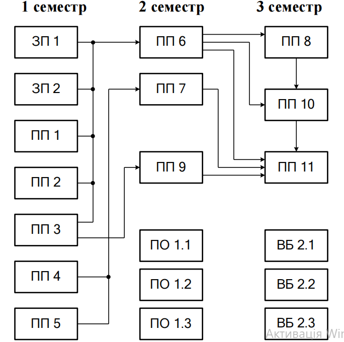

Рівень освіти: Магістр
Галузь знань: 12 Інформаційні технології
Спеціальність: F7 Комп’ютерна інженерія
Забезпечити підготовку висококваліфікованих фахівців у сфері комп’ютерних інформаційних технологій, які здатні самостійно вирішувати задачі аналізу, розробки, експлуатації та супроводу комп’ютерних систем.
| Код | Компонент | Кредити | Контроль |
|---|---|---|---|
| ЗП01 | Ділова комунікація | 3 | залік |
| ПП01 | Теорія систем | 7 | екзамен |
| ПП02 | Data Science | 5 | екзамен |
